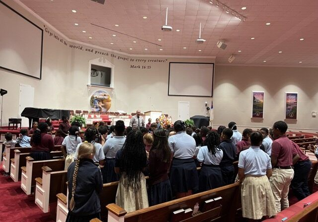
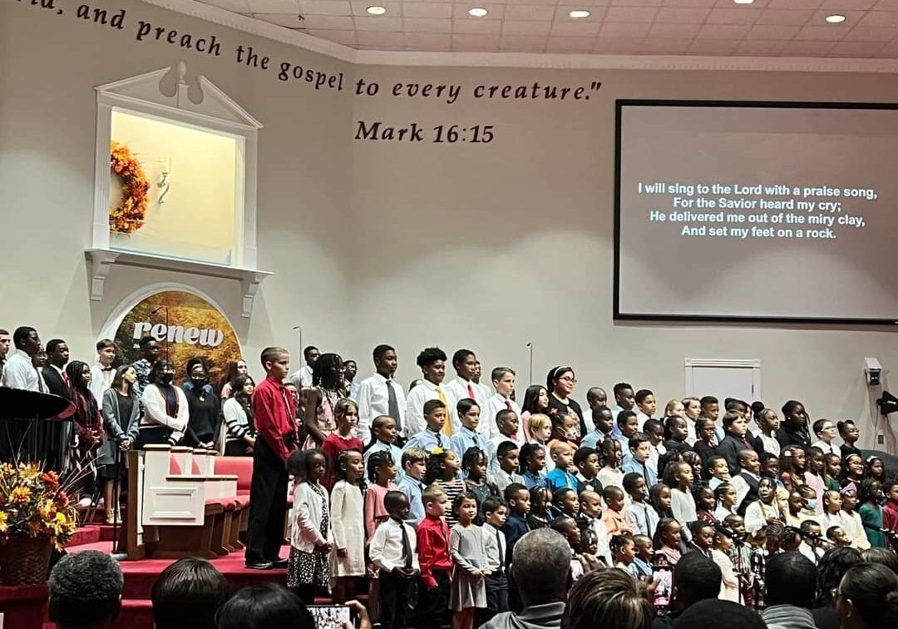

Student Life

Chapel
Both elementary and high school chapels can play a crucial role in nurturing the moral and spiritual development of students. In elementary school chapels, children may participate in creative activities like artwork or skits to reinforce the lessons they learn during these sessions. High school chapels may include guest speakers, students or faculty sharing personal testimonies, and group discussions on relevant issues. These sessions are usually seen as an opportunity for older students to reflect on their values and beliefs.
Fine Arts
Every year our students from fourth grade to twelfth grade participate in Fine Arts. We are part of an association of Christian schools. We compete against each other in Regional and State competitions. These are competitions our students look forward to participating in every year.
Music
Our students have the opportunity to receive private music lessons on campus during the school day in piano, guitar or voice. The students also attend a weekly music class during which they learn about different musical instruments, composers, periods of music and musical techniques.
Athletics Program
IBA has always enjoyed having an enthusiastic sports program throughout its 50 year history. For the boys, we offer Varsity soccer and basketball. For the girls, we offer Varsity volleyball and basketball. We compete in a league with several other Christian schools in the state of Maryland, Virginia, Delaware and West Virginia. The teams also enjoy going to a tournament at the end of each season.
Intramural Sports
Every year for the elementary grades we have intramural sports. They always enjoy getting to face off against their fellow classmates on the basketball court as well as on the soccer field. We create our own league within the school. All parents are welcome to come in and watch their student play just like any other sports game. This ensures that our elementary students benefit from playing sports without the added expense and time it takes to participate in a league.

Field Trips
Every class gets to enjoy a couple of field trips throughout the year. Depending on what grade you are in, you could go to the Baltimore Aquarium, the U.S. Capitol, the Maryland State Capitol, Lancaster, PA or enjoy one of the many historic places surrounding our area.
School Programs
An exciting time every year is when the entire school puts on a fall program for the parents. Every year is a different program, and the students always do a wonderful job. The program serves as great entertainment for parents, but it is also a great learning opportunity for the children. They learn about stage presence, singing, performing and working together with other students.
Explore the Possibilities at IBA!
Come see the campus, meet our teachers, and ask your questions.